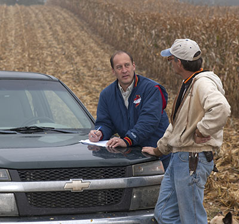
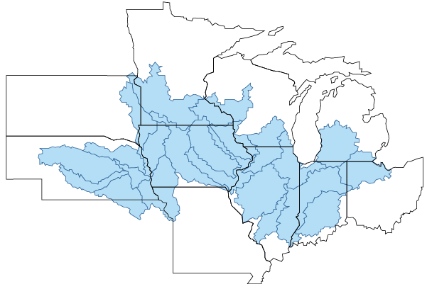
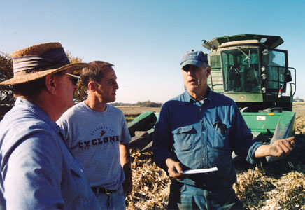

What Farmers are Saying
Farmers and scientists are learning together, how increased weather fluctuations and extreme weather events affect corn-based cropping systems in the upper Midwest, and how to create resilient cropping systems in response. Over 80 Corn-belt farmers are currently participating in this project, with a goal of 200 before summer. Each farmer provides production and agronomic data for two fields within their operation, which will be analyzed by project scientists. Project farmers also participate in socio-economic surveys, provide other feedback and leadership for the project, and test proposed management practices and cropping system changes. This video was produced at this project’s 2012 conference in Wooster, Ohio, when four farmers shared their thoughts on climate change and practices they are using to make their corn-based cropping systems more resilient in response to extreme weather events like droughts and floods.
Farmer Survey
This project's social and economic research is focused on economic assessment of corn-based cropping systems and gaining knowledge of farmer beliefs and concerns about climate change, their attitudes toward adaptative and mitigative strategies and practices, and what support farmers need to make decisions. These research findings and participation in this project by farmers in the upper Midwest provide feedback for project scientists conducting field trials, analysis and modeling. Social and economic research findings will also form the framework for developing tools for farmer decision-making, education curricula and science-based policies.
Social research conducted to-date includes a survey of farmers, to assess participants' capacity and willingness to adopt management practices and strategies that lead to long-term sustainability and productivity of corn-based cropping systems under variable weather and long-term climate changes.
 |
|
Farmer Survey Findings: A PowerPoint Presentation by J. Arbuckle, Professor, Iowa State University |
How the Survey was Conducted
Project researchers worked with the USDA-supported Useful to Usable (U2U) Climate project based at Purdue University. The CSCAP survey was sent to a stratified random sample of 18,707 farmers, with at least $100,000 of gross sales and a minimum of 80 acres of corn production in 22 HUC6 watersheds. The 22 watersheds cover a substantial portion of 11 Corn Belt states, all of which are classified as "major crop areas" for corn and soybean: Illinois, Indiana, Iowa, Kansas, Michigan, Minnesota, Missouri, Nebraska, Ohio, South Dakota and Wisconsin.

Farmer Interviews
Farmer interviews are also being utilized for this project. University extension educators will use in-depth interviews with 200+ farmers to gather data and foster educational opportunities to increase farmer knowledge and inspire learning about connections between management practices, climate variability, soil erosion, nutrient runoff, and atmospheric, economic and environmental impacts.
Investigators and extension educators will be conducting one-on-one interviews to examine the biophysical and financial characteristics of farmer's current operations and compare them to land-use scenarios that include various innovative, adaptive and mitigative practices that would be appropriate for their land. This approach will provide real-farm platforms for structured climate- and agriculture-related discussions between extension educators and producers. This information will help gauge farmer willingness and capacity to adopt alternative cropping practices.
Farmer Survey Findings ...Farmer Perspectives: A PowerPoint presentation by J. Arbuckle, Ph.D., professor, Iowa State University.